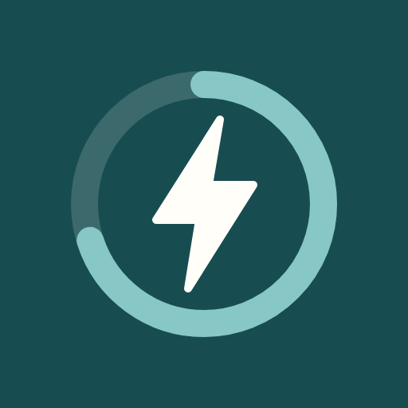

3
Nieuw van je gezondheidspraktijk
Beweeg mee metde Tabata Timer
Kort trainen, op jouw tempo.
Het idee
Kort bewegen,kort rusten
20 seconden werk, 10 seconden rust. Acht keer na elkaar en je bent klaar in 4 minuten.
WerkRust
Stap 1
Kies eentraining
Tik op de startknop en je bent vertrokken.
Stap 2
Volg de timer
1Grote cijfers, ook van ver te lezen
2Piepjes tellen af: 3, 2, 1
3Je ziet al wat er hierna komt
Stap 3
Zie hoehet moet
Elke oefening heeft een tekening en een korte uitleg.
Op jouw maat
Maak je eigentraining
Kies zelf je tijden, je rondes en je oefeningen.
Samen
Train metwie je wil
Iedereen een eigen profiel. Een training doorsturen doe je met één bericht.
Zo begin je
Zet de timer opje iPhone
1
Open timer.pvmtdankaerts.be in Safari
2
Tik op het deel-icoon
3
Kies Zet op beginscherm

TabataVeelbeweegplezier!
timer.pvmtdankaerts.be
Een initiatief van PVMT · www.pvmtdankaerts.be
9:41